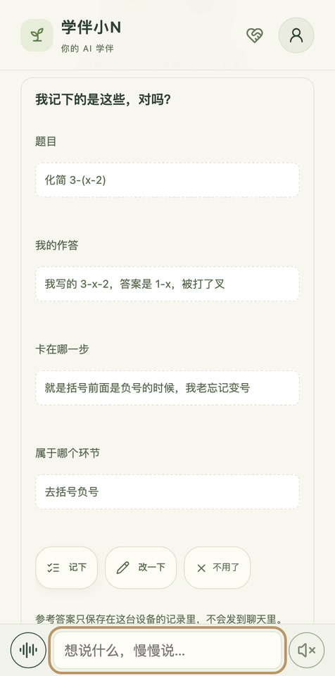
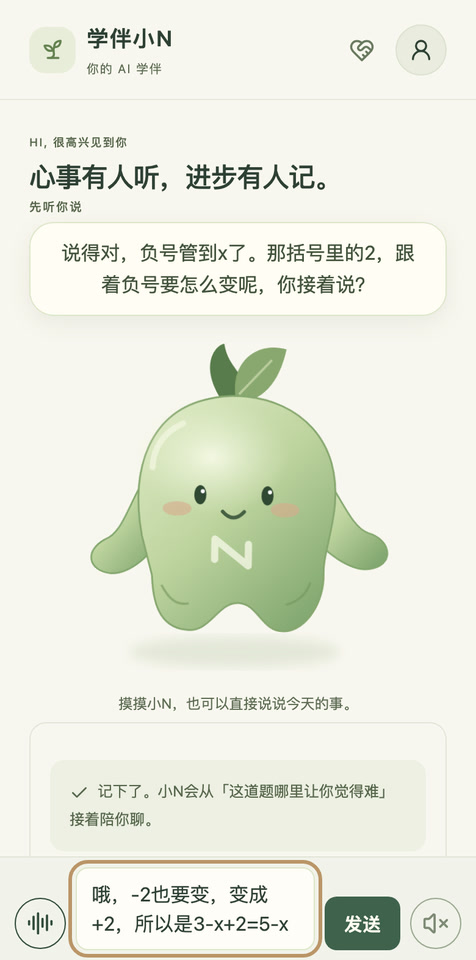
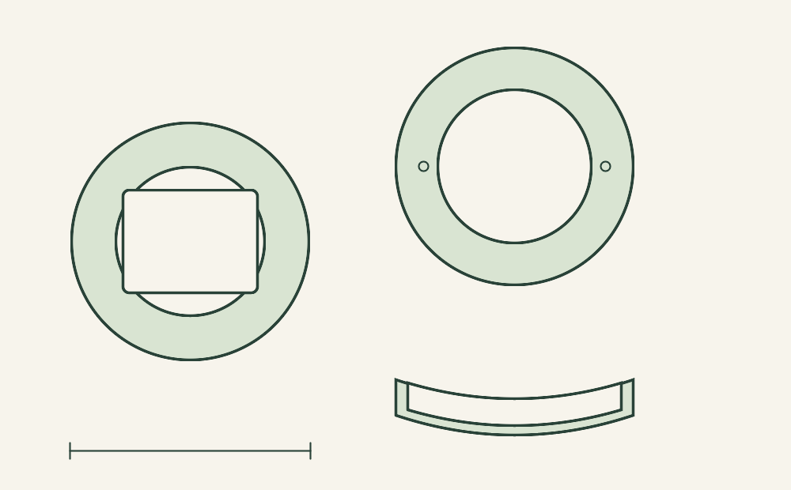

自主节奏
学习计划永远先是一份草案，分量与时间由学生拍板——可以接受、减量、改期或暂不开始。学累了随时说「今天先休息」，没有连续打卡的焦虑；个人记忆由学生授权，可随时更正、删除或关闭。
NOVA EDUCATION TECHNOLOGY · 教育科技生态
NOVA 聚焦青少年自主学习与认知观测，从初中数学切入，以学伴小N为核心，串联语音伴学、星溪五维探索世界、桌面硬件终端实验室与受控多 Agent 引擎——不替孩子交出答案，而是陪他们把卡住的那一步真正想明白。
ACC 黑客松孵化 · 研究型产品与开源软硬原型 · 站内学习示例均采用合成演示材料
01 / 使命与理念 · PHILOSOPHY
通用 AI 工具多为成人效率而生，往往一步给出完整解答。NOVA 认为，对正在建立思维习惯的青少年而言，保护思考的“留白”与记录真实的“跨步”，比立刻得到答案更重要。
学习计划永远先是一份草案，分量与时间由学生拍板——可以接受、减量、改期或暂不开始。学累了随时说「今天先休息」，没有连续打卡的焦虑；个人记忆由学生授权，可随时更正、删除或关闭。
面对笼统的「我不会」，小N 先接住情绪，再帮学生把模糊困惑拆成具体卡点。进入解题后不直接抛答案，而是一次只追问一小步，直到规律由学生亲口说出来。
进步不靠模糊夸奖，而靠可追溯的作答事实。系统由程序判对错并保存原始尝试与提示暴露记录，复习优先调度未见新题，让每一次独立跨越都有据可查。
EVIDENCE TAXONOMY · 真实成长刻度
同日反复刷题不会直接判定为“跨次稳定”；稳定状态需经多道未见新题、跨日期与跨场次检验。
借助分级提示想通当前步骤，系统如实记录提交前看过几条提示，不虚报独立程度。
同一道题初次出错后，经过小N 一步步追问，自己找出符号或推理疏漏并改对。
在后续练习或到期复习中，面对未见过的同类新题，零提示、一次独立作答正确。
02 / 业务矩阵 · BUSINESS ECOSYSTEM
围绕青少年日常学习的真实场景，NOVA 将软件对话、互动探索世界、桌面硬件终端与家长透明守护有机联动。
COMPANION AI · 移动端语音伴学
打开学伴小N 首页即可进入自然语音自由聊。按住小N 下拉可平滑收起成顶部语音栏，收起展开与回看历史均不中断收音或播报；对话里的值得记住的小事，会整理进「我的档案」，始终由学生决定是否保留。
3 − (x − 2)，先问负号管着括号里的谁，再让学生自己补出变号步骤。

INTERACTIVE ATLAS · 游戏化认知探索
在专业模式中，NOVA 将五个数学核心能力映射为地图上的五座站点。学生不必面对冷冰冰的分数表，而是在故事与交互中做出选择并说出理由，完成后逐站点亮地图并沉淀结构化探索摘要。
已上线 · 听故事拆线索，训练条件提取与语义理解
已上线 · 观测旋转与方位变换，检验空间想象
研发规划 · 2D 网格预算约束与单变量对比推理
研发规划 · 代数式运算稳定度与生活建模抽象
NOVA HARDWARE LAB · 桌面语音陪伴终端原型
手机自带社交与短视频干扰，并不总适合专注学习。NOVA 硬件实验室围绕 M5Stack CoreS3 主机 打造了第一版 96mm 圆形可 3D 打印桌面外壳原型，通过 Python 参数化脚本生成 STL，优先验证“装得下、拿得住、孩子愿意按一下说话”的真实物理交互。
当前状态：外观与装配试装第一版样机（PLA 0.20mm 切片校验完成），尚未接入小N 服务端与最终电池/灯环/声学腔验收。

xiaon_round_shell · 参数化 CAD 预览
Ø 96mm · 内部可用 Ø 89.6mm
GUARDIAN & PRIVACY · 清晰边界的成长同步
青少年需要安全的表达空间，家长需要了解真实的学习进展。NOVA 将两者的边界写进数据结构里：家长端按周一至周日生成结构化成长小结与沟通建议，绝不转发孩子的自由聊天原文、情绪倾诉或私密档案。
去括号负号处理：上周 提示后做对 → 本周 新题独立做对
03 / 五维探索世界 · FIVE-DIMENSION ATLAS
点击下方任意站点，查看 NOVA 如何以故事与交互机制承接五个数学能力维度。报告不打总分、不排名，每条结论都附带具体的作答依据。
深度融合《星溪镇：钟声响起之前》互动叙事体验。学生不必在题海里找答案，而是跟着小N 走进星溪镇听故事、拆线索，把复杂条件和运算顺序梳理清楚；通关后自动点亮地图第一站，并将探索回顾写入「我的档案」。
04 / 技术与安全底座 · ARCHITECTURE & GUARDRAILS
在教育产品里，大模型的自由发挥往往意味着“算错数”或“乱打分”。NOVA 使用本机 Node 与 SQLite 作为确定性规则中枢，用严格的工程护栏把四个 Agent 角色关在各自清晰的权限框里。
01 / Tutor
陪伴与追问
负责自然对话、情绪承接与思路追问。评分标准与参考答案不进入自由聊上下文，各角色之间不互相转发全部聊天记录。
02 / Assessor
证据对照分析
对照可信题面与评分要点（rubric）分析学生的文字理由，所有客观对错判定与能力分层仍由确定性程序执行。
03 / PlannerReporter
报告与草案
仅消费程序生成的结构化事实、证据 ID 与获准偏好，输出分角度学习报告与可调计划草案，严禁凭空编造进步结论。
04 / Generator (E1)
白名单出题
当前仅开放「去括号负号」与「合并同类项」两个知识点的变式出题；模型只选模板与整数参数，绝不自由发散超纲题。
E1 VERIFICATION LOOP · 受控出题双轮验算闭环
检查先修条件、本场次 10 道计算预算、日限额与到期状态。
仅传最近 ≤6 次作答判定与错误线索，绝不发送聊天原文。
模型在白名单模板内选参并给出题面、答案与提示草案。
程序按模板独立重算题面/答案/提示，核对可判性与去重指纹。
先展示针对环节与预计用时，确认后才展示题面并计入证据链。
05 / 教育研究与透明路线 · RESEARCH & HONESTY
NOVA 目前仍处于研究与原型演进阶段。我们拒绝编造百万用户或未经检验的“提分神话”，而是把能力边界、合成数据声明与后续路线清楚呈现给每一位教育者与合作方。
| 演进维度 | 当前已实现（原型实测） | 下一阶段规划 |
|---|---|---|
| 学段与知识范围 | 初中数学起步，聚焦有理数、去括号负号、合并同类项及五维核心子任务。 | 逐步扩展至更多初中代数/几何单元与其他理科基础学科。 |
| 首页伴学体验 | 语音自由聊、下拉收起小N、不中断语音的往期回看、个人档案主动整理与可控编辑。 | 补充拍照识题（OCR）与手写草稿步骤识别能力。 |
| 五维探索世界 | 已上线「理解花园 · 星溪镇」与「空间山丘 · 星象风车台」，保留完整五维生活故事测评与月底复测提醒。 | 完成「逻辑小桥 · 温室水路」2D 网格切片、「计算工坊」与「生活集市」互动化升级。 |
| 受控出题 (E1) | 在去括号负号、合并同类项 2 个知识点跑通白名单模板 + 程序双轮验算闭环。 | 沿用同等确定性验算标准，扩展至更多可验证的计算与推理题型。 |
| 桌面硬件终端 | 完成 96mm 圆形外壳参数化建模与 Bambu Lab A1 mini 无支撑 3D 打印尺寸校验。 | 开展 M5Stack CoreS3 实物试装，迭代灯环、声学腔、电池仓及小N 服务端联动。 |
| 研究效度与合规 | 全站使用合成演示材料，如实展示系统内从“提示后做对”到“新题独立做对”的变化；账号隔离已具备基础 SQLite 独立库。 | 在监护授权下开展小范围真实学生试用与长期学习研究；建设正式账号体系、真实监护核验与应用层加密。 |
06 / 合作与共建 · PARTNERSHIPS
无论你关注初中数学课堂试点、学习科学测评研究、低干扰桌面学习硬件，还是受控多 Agent 开源工程，都欢迎向 NOVA 发起交流。
面向初中数学教研组与创新实验班，在明确监护授权前提下，共同探索温和、低焦虑的课后伴学试用。
欢迎学习科学、数学教育与心理测量研究者共同探讨五维观察效度、过程性证据与互动学习机制。
基于 M5Stack CoreS3 开源圆形外壳原型，联合工业设计、声学与嵌入式团队打磨青少年桌面伴学终端。
欢迎前端工程、受控多 Agent 架构、互动叙事关卡设计与参数化 3D 结构开发者加入开源共建。